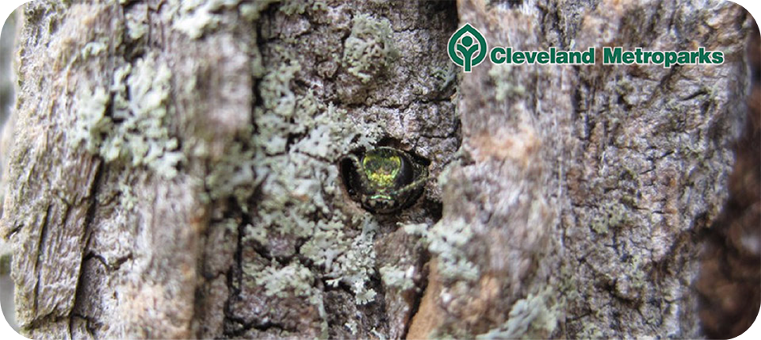
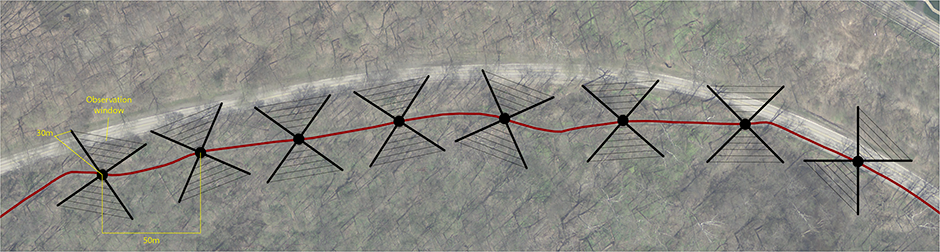

The Emerald ash borer (EAB) (Agrilus planipennis) is a wood-boring beetle that completes its lifecycle inside ash trees (Fraxinus spp.). Native to Asia, this beetle was first identified killing ash trees in the Detroit, Michigan area in 2002. EAB likely arrived to the United States as a result of an accidental introduction of infested shipping pallets originating from China.
Adult EAB lay their eggs on the bark of ash trees and once the larvae hatch they burrow into the cambium (area between the bark and wood) of the tree. Here the larvae bore "S"-shaped patterns or galleries into the tree as they feed. This feeding process is what damages the ash tree by destroying the tissues that bring water and nutrients from the base to the canopy. As the adult beetles emerge they bore distinctive "D"-shaped holes in the trunk.
Since being identified, EAB has killed tens of millions of ash trees throughout the U.S. and Canada. The first EAB record for Cuyahoga County was in 2006 along I-71 near Middleburg Heights. Effective October 2006 Cleveland Metroparks modified public policy to prohibit the transportation of firewood through Cleveland Metroparks. Significant EAB infestations were documented in 2008 along Big Creek Parkway and in Brecksville Reservation.
As of 2012, EAB has been positively identified in nine reservations (Bradley Woods, Huntington, Rocky River, Mill Stream Run, Big Creek, Hinckley, Brookside, Brecksville, and South Chagrin). In order to better track the EAB, the Cleveland Metroparks uses purple prism traps to catch adult specimens. Adult EAB are attracted to the trap by a chemical that mimics the odors of an ash tree. When the EAB bores into the fabric, it becomes trapped by a glue coating the inside. The traps are placed in trees in the late spring when the adult EABs emerge and begin flying, then removed in late summer/early fall, when the adults are no longer flying. These traps pose no risk to humans, domestic pets, or wildlife and are used for tracking purposes only. These traps are not a method of EAB removal.
Ash trees infested with EAB can be treated with pesticides, but this method requires multiple treatments and is very expensive. The most effective treatment for EAB infested trees is to remove ash trees before they die. Once dead, ash trees become very brittle and pose a major threat to people walking near them. To prevent any accidents the Cleveland Metroparks is proactively removing any ash trees that are within falling distance of public areas, roads, and paths. It is estimated that nearly 8,000 ash trees fall within these areas and will have to be removed.
In 2011, Cleveland Metroparks began an "Ash Mapping" program where volunteers were recruited from Cleveland Metroparks Trail Monitors roster. Trail Monitors spend time hiking and biking on the APT, bridle trails, and natural surface trails to assist park visitors with questions, emergency situations, and report trail conditions to park management staff. They are knowledgeable about the Park District, but that knowledge is not a prerequisite to the ash mapping project. Enthusiasm, physical ability, and a willingness to learn species identification are the most important criteria.
Training consisted of a one-day session with both classroom and field training exercises. Project goals, EAB biology, tree species identification, survey design and techniques, and an introduction to data collection were presented during the indoor session. Field training included use of equipment (hand-held global positioning system (GPS) receivers and laser distance measuring devices), data form use, estimation of tree size, species identification, and recognition of woodpecker feeding on ash trees. At the end of the field exercises, volunteers practiced the survey regimen from start to finish. Teams of two were assembled for 4 of Cleveland Metroparks 16 reservations.
The survey consisted of a sample point every 50 meters along the APT (see below). “Ash Mappers” collected information on the number of ash trees in each of 3 DBH size classes (4-12”, 13-20”, >20”) and the presence of woodpecker feeding damage (proportion of trees with flecking in each size class). Both sides of the APT were surveyed at each point perpendicular to the trail, and the survey was restricted to a 90º observational window. All ash trees readily visible within the observational window (~30m) were counted. Tree visibility was proportional to distance and tree size. Mappers used hand held GPS units to reference each sample point.
The survey occurred during winter months when ash bark and branch characteristics are easily identified and evidence of woodpecker feeding is apparent. While woodpecker feeding also may be indicative of other insect activity, its presence in areas with EAB infestations is a good proxy for the presence of EAB larva (Lindell et al 2005; Wilson and Rebek 2005). Trees were recorded as having less than 50%, equal to 50% or more than 50% of their trunk covered in woodpecker damage.
|
Dr. Constance Hausman |
Sarah Eysenbach |
{kind=link}
{kind=link}
{kind=link}
{kind=link}
{kind=link}
{kind=link}
{kind=link}
{kind=link}